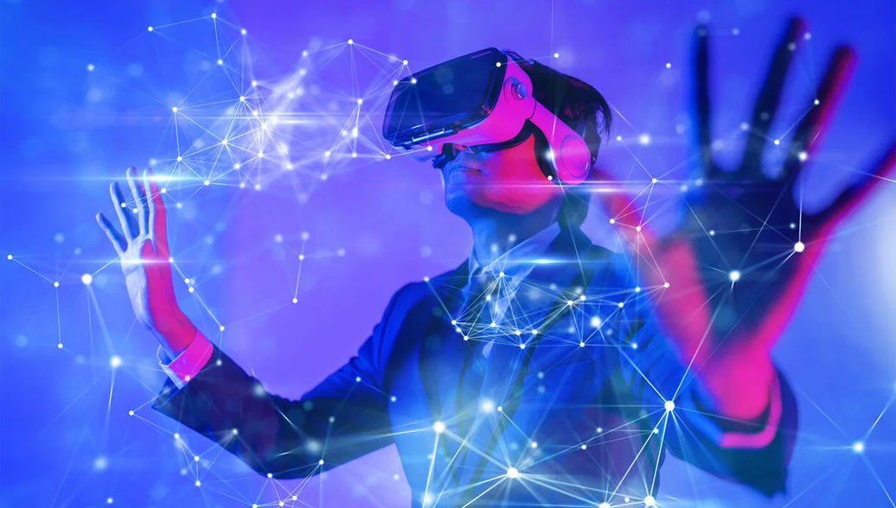

Технологические тренды 2025 года
-
Метавселенные с визуальными и тактильными эффектами
Переименование Facebook в сеть Meta — возможно, этот ребрендинг просто отражает стремление технологических брендов угадать, что метавселенная может означать для реальных потребителей. Дизайнеры уже погрузились в разработку концепций — и некоторые из них уже предпочитают использовать виртуальные платформы для демонстрации новинок вместо личного взаимодействия с потребителем. Так, в этом году проект My House от Samsung дебютировал на платформе мета-вселенной Zepeto.
Компании по-прежнему соревнуются в создании умных очков, помогающих погрузиться в виртуальную реальность, однако нынешний год характерен попытками воссоздать уже реалистичный опыт в виртуальном мире. Так, Panasonic представила PebbleFeel, виртуальный жилет, который позволяет людям чувствовать жар и холод в метавселенной — он производится дочерней компанией Shiftall, выполнен из легкого материала. Обернутый вокруг груди он обеспечивает температуру от 9 до 42 градусов по Цельсию. Другие тактильные жилеты, вроде модели от испанской фирмы Owo (модель стала победителем в секторе инноваций), позволяют людям испытывать до трех десятков различных ощущений, пока они находятся в метавселенной или играют в видеоигры.